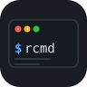

CLI のための個人コマンド知識ベース
WindowsmacOSLinux
シェル履歴から「残す価値のあるコマンド」だけをキュレーション。
{{プレースホルダー}} 置換・タグ・全文検索で素早く呼び出し、そのまま実行。
ストレージはローカルの TOML ファイル一枚。依存は typer だけ。
atuin・fzf・hstr はライブ履歴を検索するツール。rcmd は「また使いたいコマンド」だけを手元に残すためのツールです。ノイズのない自分専用コマンド集を育てられます。
{{プレースホルダー}} 置換コマンドに {{image}} や {{path}} を埋め込んでおき、呼び出し時に --set image=alpine で差し込み。汎用テンプレートとして繰り返し再利用できます。
-t docker -t dev でタグ付け、rcmd search docker で絞り込み。出力は 1 行ずつなので fzf との組み合わせも自然です。
ストレージは ~/.config/rcmd/store.toml（または %APPDATA%\rcmd\store.toml）の TOML ファイル 1 枚。手で編集でき、dotfiles リポジトリに入れるだけで複数マシンへ展開できます。
rcmd history --unique --reverse | fzf | rcmd save -d "説明" のパイプ一発で、既存の履歴から選んで登録。まっさらなところからでもすぐ始められます。
依存は typer のみ。uv sync && uv run rcmd --help で即起動。Python の煩雑な環境構築なし。
1. リポジトリをクローン
git clone https://github.com/ymatsuza/rcmd.git && cd rcmd2. 依存を解決して起動（uv 推奨）
uv sync
uv run rcmd --helpuv が入っていない場合は astral.sh/uv を参照してください。
# プレースホルダー付きで保存 rcmd save "docker run --rm -it -v {{path}}:/work {{image}} bash" \ -d "カレントディレクトリをマウントしてインタラクティブシェル" \ -t docker -t dev # シェル履歴から fzf で選んで保存 rcmd history --unique --reverse | fzf | rcmd save -d "説明を書く" -t imported
# キーワード検索（fzf と組み合わせやすい 1 行出力） rcmd search docker # タグで絞り込み rcmd list -t git # 詳細表示（man ページ風） rcmd show k3f9
# 標準出力に展開（$(rcmd get ...) や clip で活用） rcmd get k3f9 --set path=$PWD --set image=alpine rcmd get k3f9 --set path=. --set image=alpine | clip # Windows rcmd get k3f9 --set path=. --set image=alpine | pbcopy # macOS # そのまま実行（--dry-run でプレビュー） rcmd run k3f9 --set path=. --set image=alpine rcmd run k3f9 --set path=. --set image=alpine --dry-run
rcmd edit k3f9 -d "新しい説明" -t docker
rcmd rm k3f9$RCMD_STORE に任意のパスを指定~/.config/rcmd/store.toml（XDG 準拠）%APPDATA%\rcmd\store.tomlプレーンな TOML なのでテキストエディタで手編集可能。dotfiles リポジトリに入れて複数マシン間で同期できます。
A personal command knowledge base for the CLI
WindowsmacOSLinux
Curate the commands worth keeping from your shell history.
Recall them instantly with {{placeholder}} substitution, tags, and full-text search — or run them directly.
Storage is a single local TOML file. One dependency: typer.
atuin, fzf, and hstr search your live history. rcmd curates the commands worth keeping. Build a personal reference you’ll actually reuse, without the noise of ten thousand transient invocations.
{{placeholder}} substitutionEmbed {{image}} or {{path}} in a saved command, then fill them at recall time with --set image=alpine. Turn any one-off command into a reusable template.
Tag with -t docker -t dev, then narrow with rcmd search docker. One-line output keeps it fzf-friendly.
The store lives at ~/.config/rcmd/store.toml (or %APPDATA%\rcmd\store.toml on Windows). Plain TOML — hand-edit it, commit it to your dotfiles repo, and you’re synced across machines.
rcmd history --unique --reverse | fzf | rcmd save -d "desc" — pipe your existing history through fzf and save the good ones in one shot.
Just typer. uv sync && uv run rcmd --help and you’re done. No environment wrangling.
1. Clone the repo
git clone https://github.com/ymatsuza/rcmd.git && cd rcmd2. Install deps and run (uv recommended)
uv sync
uv run rcmd --helpDon’t have uv yet? See astral.sh/uv.
# Save with placeholders rcmd save "docker run --rm -it -v {{path}}:/work {{image}} bash" \ -d "mount cwd, interactive shell" \ -t docker -t dev # Import from shell history via fzf rcmd history --unique --reverse | fzf | rcmd save -d "describe me" -t imported
# Keyword search (one-line output, fzf-friendly) rcmd search docker # Filter by tag rcmd list -t git # Inspect one entry (man-page view) rcmd show k3f9
# Print to stdout (use with $() or a clipboard tool) rcmd get k3f9 --set path=$PWD --set image=alpine rcmd get k3f9 --set path=. --set image=alpine | clip # Windows rcmd get k3f9 --set path=. --set image=alpine | pbcopy # macOS # Run it directly (--dry-run to preview first) rcmd run k3f9 --set path=. --set image=alpine rcmd run k3f9 --set path=. --set image=alpine --dry-run
rcmd edit k3f9 -d "new description" -t docker
rcmd rm k3f9$RCMD_STORE to any path~/.config/rcmd/store.toml (XDG)%APPDATA%\rcmd\store.tomlPlain TOML — hand-edit it or commit it to your dotfiles to sync across machines.
rcmd is a free, open-source tool built in personal time. Sponsorships are greatly appreciated.